이 부업은 어떻게 돈을 버나요
Sarah의 가게는 프린트 온 디맨드 방식으로 굴러가요. 재고를 쌓아 두지 않고, 주문이 들어올 때마다 그 한 장을 찍어 보내는 방식이에요. 아래 그림은 영상이 말로 설명한 순서를 한 줄로 옮긴 거예요. 나는 ①에서 디자인만 하고, 인쇄와 배송(④)은 Printify가 맡아요.
견종별 옷이 없다는 데서 시작했어요
Sarah는 Etsy에서 재치 있는 강아지 옷을 찾다가, 강아지 전반을 다룬 옷은 많은데 허스키나 코기처럼 특정 견종을 다룬 옷은 마음에 드는 게 없다는 걸 알아챘어요. 원하는 사람은 있는데 아직 아무도 만들지 않은 자리, 곧 시장의 빈틈이에요. 그래서 그 빈틈을 직접 채우기로 했어요.
문구는 ChatGPT·Gemini·Claude 같은 LLM(Large Language Model) 챗봇과 같이 짰고, 그림은 AI 이미지 생성기로 만들었어요. 아래 화면에는 'Loafin' Around'(빈둥빈둥)라는 문구를 넣은 코기 그림 후보가 격자로 깔려 있어요. 아래쪽 입력창에 적힌 요청은 '굵은 선으로 그린 귀여운 코기, 흰 배경, Loafin' Around 문구'예요.
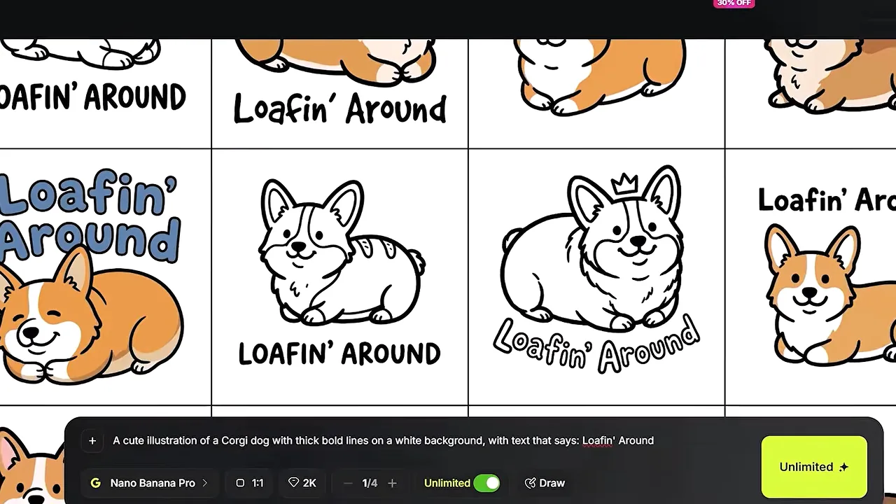
고른 그림은 Printify 같은 프린트 온 디맨드 앱에 올려 빈 티셔츠에 입혀요. Printify에는 티셔츠처럼 무늬 없는 상품이 잔뜩 있고, 여기에 내 디자인을 얹어 웃돈을 붙인 값으로 가게에 올리면 돼요. 아래 화면은 청록색 티셔츠 앞면 가운데에 코기 그림을 배치한 상태예요.
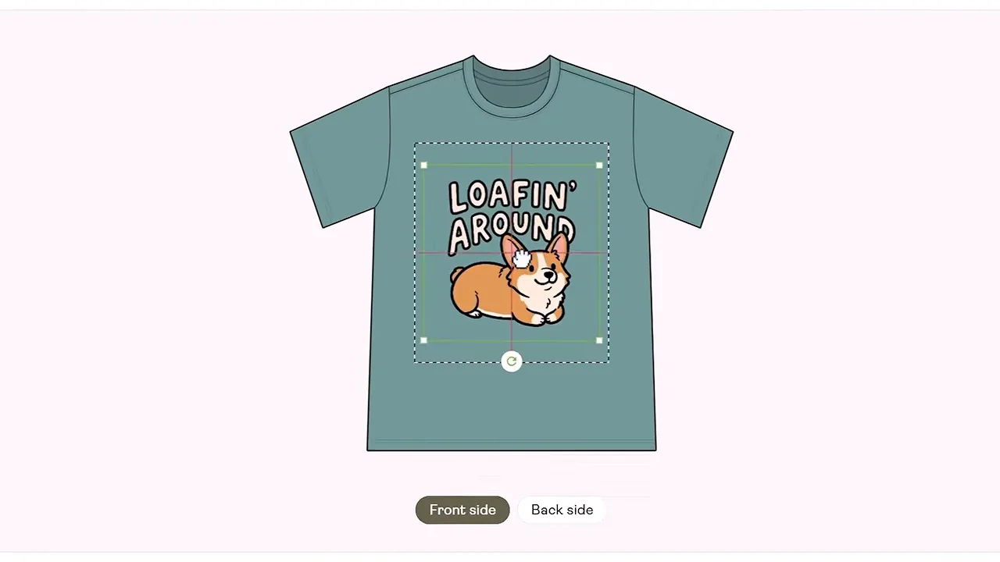
손님은 Etsy가 데려왔어요
Etsy에는 매달 수억 번의 방문이 있어요. Sarah는 Claude 같은 챗봇으로 상품을 Etsy 알고리즘에 맞게 다듬어서, 원래 Etsy로 들어오는 사람들을 자기 상품으로 끌어왔어요. 2주 만에 첫 두 건이 팔렸고 그 뒤로 눈덩이처럼 불었다고 해요. 아래는 영상에 나온 가게 통계예요. '최근 7일' 탭이 켜져 있고, 조회 8,658회, 주문 223건, 방문 4,133회, 매출 7,082.40달러가 보여요.
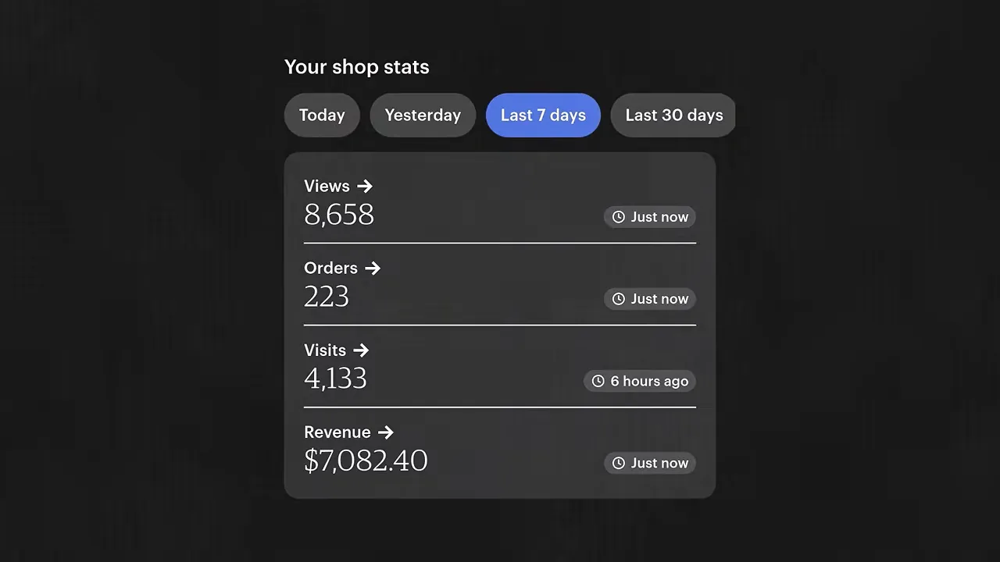
1단계: 내가 이미 손님인 분야를 골라요
첫 단계는 무엇을 할지 고르는 일이에요. 본업이 주 40시간을 넘는 상태에서 부업을 얹으려면, 부업이 최대한 쉬워야 해요. 그래서 Sarah는 자기가 불공정한 이점을 가진 분야를 골랐어요. 강아지를 좋아하고, 원래 강아지 굿즈를 사던 사람이었거든요. 그 니치의 손님이 곧 나 자신인 셈이에요.
50장 중 어떤 걸 올릴까요
Sarah는 시청자에게 문제를 하나 내요. AI에게 티셔츠 그림을 50장 뽑게 하는 건 누구나 할 수 있어요. 하지만 50장을 다 Etsy에 올릴 수는 없어요. 그럼 어떤 게 가장 잘 팔릴까요? 아래 화면처럼 비슷비슷한 코기 그림이 줄지어 있으면 고르기가 쉽지 않아요.
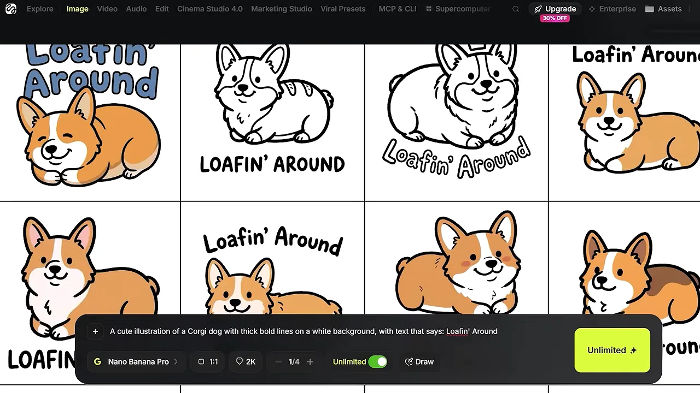
문제는 더 어려워져요. AI 이미지 생성기는 만든 그림을 고칠 수도 있어요. 그러니 '지금은 최고가 아니지만, 조금 고치면 최고가 될 그림'까지 알아봐야 해요. 여기서 손님이라는 이점이 살아나요. Sarah는 '내가 이걸 상품으로 보면 살까?'를 잣대로 삼았어요. 그리고 두 그림의 좋은 점을 합쳤어요. 아래 화면 입력창 왼쪽에 고른 그림 두 장이 붙어 있고, 요청문은 '두 번째 그림의 큰 글씨 스타일을 코기 위에 겹쳐 쓰고, 코기는 첫 번째 그림 것을 쓰되 아래 글씨는 빼 달라'는 내용이에요.
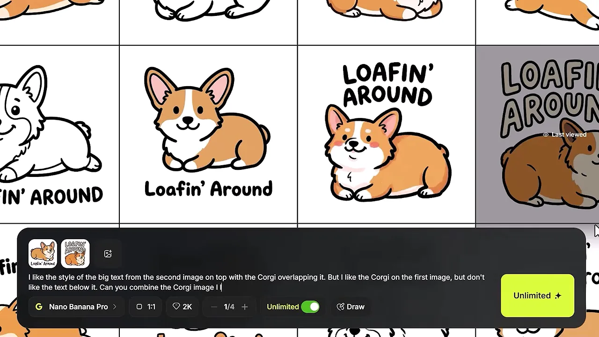
남에게 좋은 부업이 나에게도 좋진 않아요
Sarah는 부업 아이디어 영상이 쓸모 있다고 말해요. 여러 아이디어를 보다가 나만의 이점과 맞는 하나를 고르면 되거든요. 예로 든 건 AI로 만든 가상 패션 모델 계정이에요. AI 영상 생성기로 만든 모델이 Amazon에서 파는 옷을 입고 나오고, 계정 주인은 제휴 링크로 돈을 벌어요. 아래는 그런 계정의 화면이에요. 위쪽 동그라미에는 코디 묶음이 있고, 아래에는 같은 옷차림의 여성들이 서 있는 게시물이 줄지어 있어요.
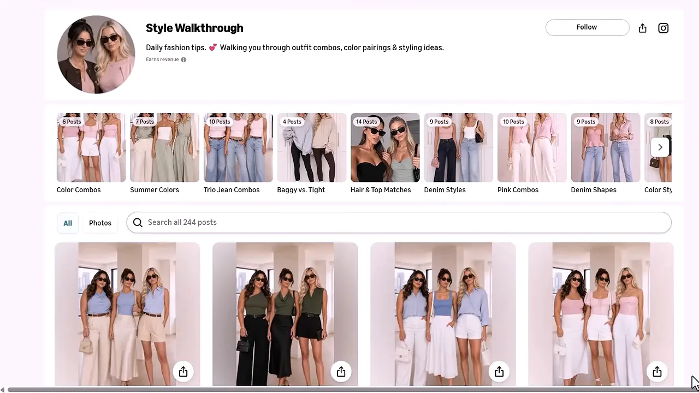
보너스: AI로 사람들이 겪는 문제를 찾아요
Sarah는 부업을 성공시키는 더 쉬운 길로, 사람들이 겪는 문제를 찾아 풀어 주는 걸 꼽아요. 자기 가게가 첫 판매를 빨리 낸 것도 바로 이 덕분이라고 봐요. 견종별 옷을 원하는 사람들에게 그걸 만들어 줬으니까요. 영상은 '시장의 빈틈'이 무슨 뜻인지 영어 사전 화면으로 보여 줘요.
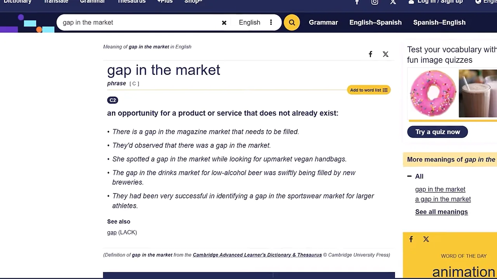
왜 베끼면 안 될까요
처음 연 가게에는 리뷰도 사회적 증거도 없어요. 초보들이 흔히 하듯 이미 잘 팔리는 Etsy 가게의 티셔츠를 베끼면, 손님은 리뷰가 쌓인 원래 가게에서 사요. 새 가게를 믿고 사 줄 이유가 없거든요. 그래서 원하는데 아직 없는 무언가를 만들어야 해요. 빈틈을 채우는 건 그 이유를 만드는 가장 단순한 방법이에요.
빈틈은 상품에만 있지 않아요. 유튜브의 특정 장르에 영상이 모자랄 수도 있고, 우리 동네 가게들이 어떤 마케팅 서비스를 원할 수도 있어요.
운 대신 AI 조사를 써요
Sarah는 자기가 빈틈을 우연히 발견했다고 인정해요. 운을 기다리지 않으려면, 1단계에서 고른 분야를 AI 챗봇에 주고 딥 리서치를 시키면 돼요. 그 분야 사람들이 온라인에서 어떤 문제를 털어놓는지 찾아 달라고 하는 거예요. 영상의 예는 교사용 디지털 상품이에요. 아래 화면에서 Sarah는 Claude에게 '교사들이 해결책이 부족하다고 느끼는 문제를 조사해 달라, 디지털 상품으로 풀 수 있는 것이어야 한다'고 써요.
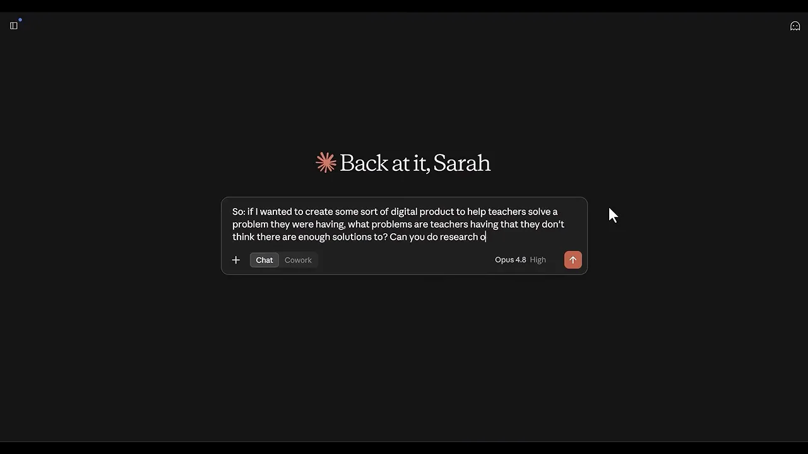
요청을 보내면 Claude가 조사 계획을 세우고 자료를 모으기 시작해요. 오른쪽 패널 제목은 'Teacher pain points research'(교사의 불편 조사)이고, 그 아래로 출처 사이트 이름과 사이트별로 모은 자료 수가 쌓여 가요.
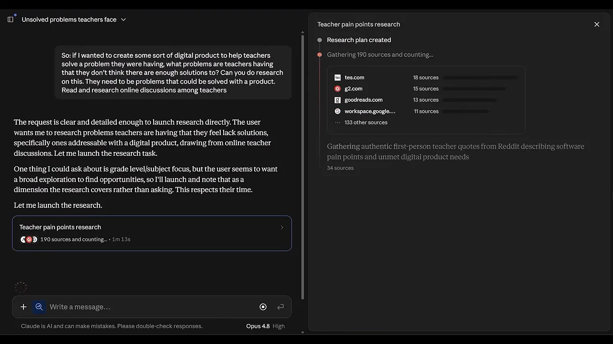
2단계: AI 도구를 이어 붙인 작업 흐름
아이디어를 정했으면 그 부업에 맞는 AI 작업 흐름을 만들어요. 어떤 흐름이 될지는 부업마다 완전히 달라요. Sarah는 자기 흐름을 예시로 보여 줘요. 아래 그림이 전체 모습이에요. 왼쪽에 챗봇 세 개, 가운데에 이미지 도구 Nano Banana와 Higgsfield, 오른쪽에 Canva가 화살표로 이어져 있어요.
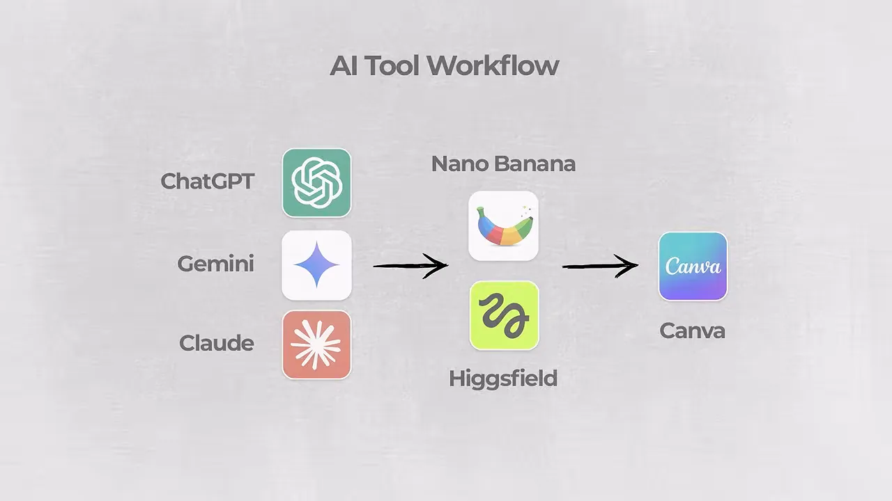
칸마다 맡는 일을 정리하면 이래요.
| 칸 | 도구 | 하는 일 |
|---|---|---|
| 문구 | ChatGPT · Claude · Gemini | 니치 옷 아이디어와 재치 있는 문구를 짜요 |
| 그림 | Nano Banana Pro (Higgsfield 안에서) | 문구를 넣은 그림을 만들어요. Higgsfield는 여러 이미지·영상 모델을 구독 하나로 묶어 둔 서비스예요 |
| 인쇄용 파일 | Canva Pro | 배경 제거 → 업스케일 → 투명 배경 PNG(Portable Network Graphics)를 2배 해상도로 내보내기 |
문구와 그림
첫 칸에서는 챗봇에게 아이디어를 쏟아 내게 해요. 아래 화면은 Gemini가 코기 문구를 번호를 붙여 늘어놓은 모습이에요. 'Powered by Loaf', 'Short Legs, Big Attitude'(다리는 짧아도 기세는 크게)처럼 코기의 짧은 다리와 빵 같은 몸을 놀리는 말장난이 많아요.
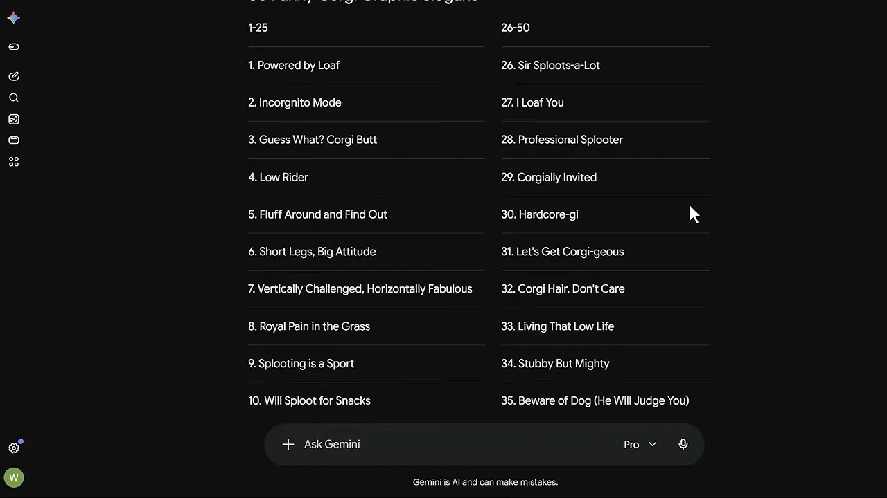
인쇄용 파일로 다듬기
AI가 만든 그림은 대개 흰 배경이 붙어 있어요. 그대로 찍으면 티셔츠 위에 흰 네모가 함께 찍혀요. 그래서 Canva Pro의 AI 배경 제거로 배경을 지우고, AI 업스케일로 해상도를 올려요. 아래 Canva 편집 화면 왼쪽 도구 목록에 두 기능이 보여요. 아래 줄 첫 번째가 'BG Remover'(배경 제거), 위 줄 맨 오른쪽이 'Upscale'(업스케일)이에요.
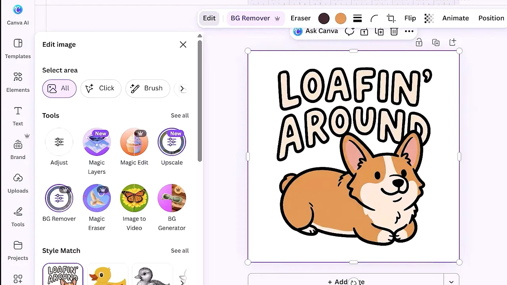
내 작업 흐름은 챗봇에게 물어보세요
부업이 다르면 흐름도 달라요. Sarah는 챗봇에게 흐름을 짜 달라고 하라고 권해요. 이때 부업 내용만 말하지 말고 내 제약도 같이 적어야 해요. 아래 화면의 요청문에는 교사용 디지털 플래너와 Notion 템플릿을 만들고 싶다는 목표 아래로 조건 세 줄이 있어요. '구독료는 한 달 50달러까지', '기술에 밝지 않은 초보용 도구', '도구는 되도록 적게'예요.
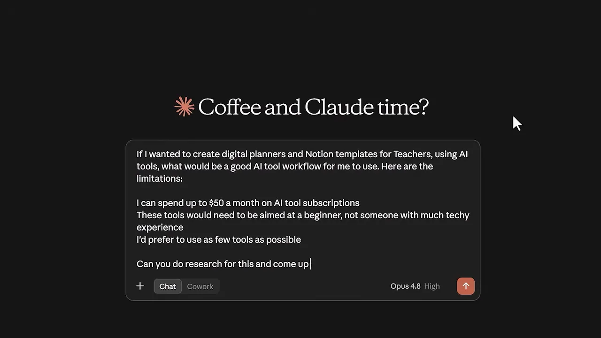
Claude의 답은 'Recommended stack (3 tools, ~$32/month)'이라는 제목으로 시작해요. AI 비서 하나(Claude나 ChatGPT, 월 약 20달러), Canva Pro(연간 결제 시 월 약 12달러), Notion 무료판이에요. 맨 아래 문단은 이 조합이 한 달 약 32달러라 50달러 예산 안에 넉넉히 들어간다고 정리해요.
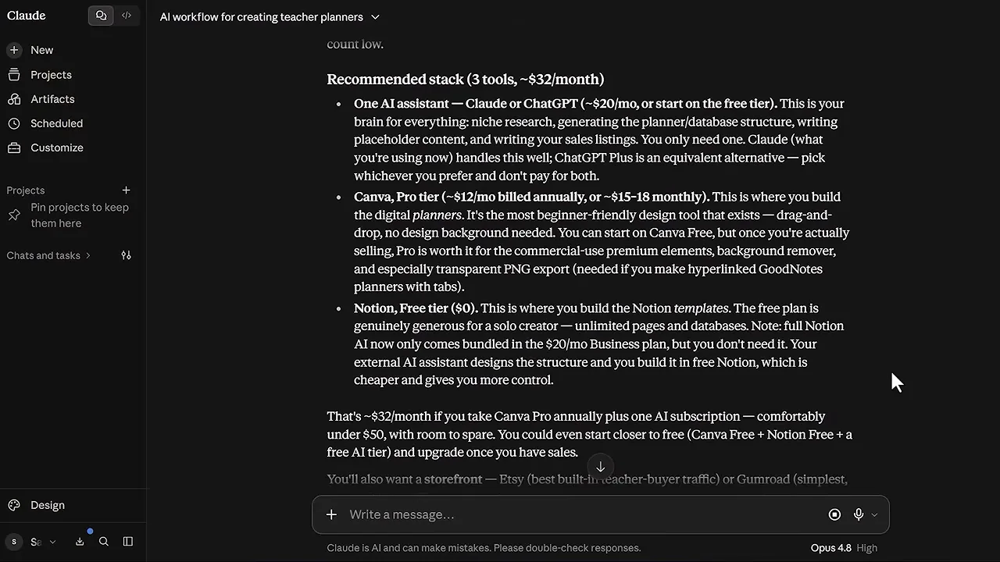
보너스: 작업 흐름을 AI 에이전트에게 맡겨요
여기서부터는 선택 단계예요. 2단계에서 만든 작업 흐름을 AI 에이전트에게 넘기면, 내가 회사에 있거나 자는 동안에도 일이 돌아가요. Sarah는 꼭 할 필요는 없지만, 본업이 바쁜 사람에게 특히 쓸모 있다고 말해요.
챗봇과 에이전트는 무엇이 다를까요
시청자들이 가장 헷갈려하는 부분이라 Sarah가 따로 설명해요. 화면은 Sarah의 얼굴만 나와서, 설명을 그림으로 옮겼어요. 왼쪽 챗봇은 시킨 일 하나에 답하고 멈춰요. 오른쪽 에이전트는 같은 LLM을 쓰면서 내 컴퓨터와 내가 연결해 준 도구까지 손에 쥐고, 여러 작업을 혼자 이어서 해요.
Sarah는 지금 가장 유명한 에이전트로 Claude Code를 꼽아요. 이름에 'Code'가 들어가지만 코딩 말고도 많은 일을 한다고 강조해요. 쓰려면 유료 Claude 요금제가 필요해요. 데스크톱 앱을 설치해 열고, 에이전트 모드인 Code 모드로 바꾸면 돼요.
도구를 연결하는 세 가지 방법
다음은 작업 흐름의 도구를 Claude Code에 연결하는 일이에요. 첫 칸인 Claude는 이미 쓰고 있으니 연결할 필요가 없어요. 남은 건 그림을 만들 Higgsfield와 인쇄용 파일을 만들 Canva예요. 방법은 세 가지예요.
| 방법 | 어떻게 하나요 | 영상에서 쓴 곳 | 짚을 점 |
|---|---|---|---|
| 공식 커넥터 | 커넥터 목록에서 앱을 찾아 추가하고, 내 계정으로 로그인해요 | Canva | 기능 제한이 있을 수 있어요. Canva 커넥터로는 배경 제거 같은 AI 도구를 못 써요 |
| CLI(Command-Line Interface) 설치 | 앱이 준비해 둔 설치 문구를 복사해 Claude Code에 붙여 넣고 Enter | Higgsfield | Higgsfield 안의 이미지·영상 모델을 모두 쓸 수 있게 돼요 |
| Chrome 확장 프로그램 | 무료 Claude 확장을 깔고, 쓸 앱에 로그인한 Chrome 창을 열어 둬요 | Canva | Claude Code가 그 창을 직접 조작해요. 커넥터로 막힌 기능도 쓸 수 있어요 |
공식 커넥터는 설정 화면의 Connectors 목록에서 찾아요. 아래 화면에서 검색창에 'canva'를 치자 Canva가 하나 나오고, 오른쪽에 'Connect' 버튼이 있어요.
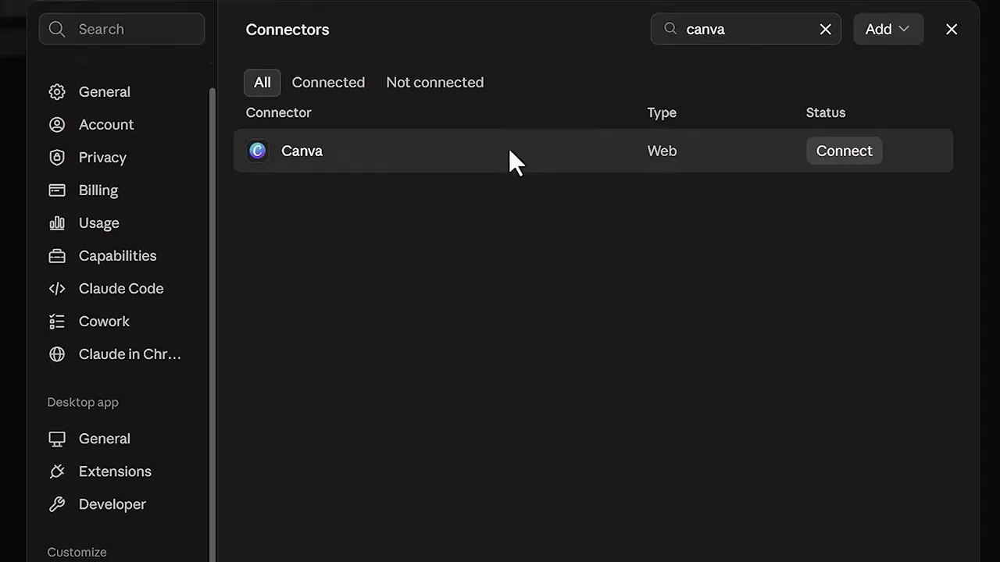
Higgsfield는 CLI 설치 방식을 제공해요. 아래 화면의 'HIGGSFIELD CLI FOR ANY AI' 페이지에서 Claude Code 탭을 고르면, ①번 칸에 Claude Code에 그대로 보낼 설치 요청문이 들어 있어요. 이걸 복사해 붙여 넣으면 Claude Code가 알아서 설치해요.
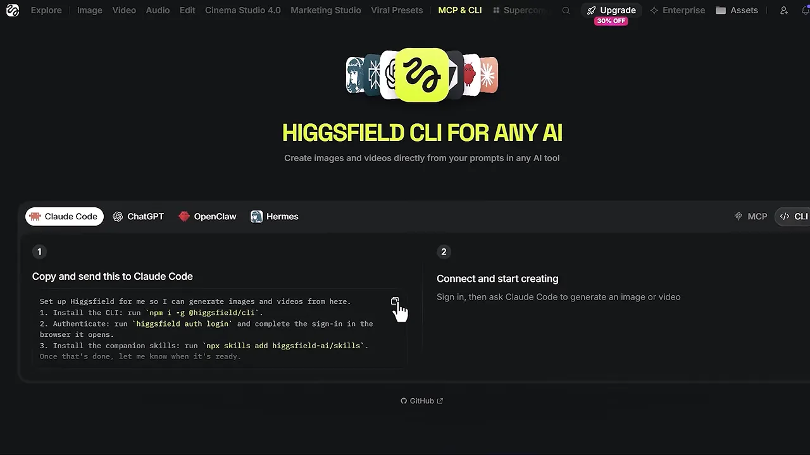
세 번째는 Chrome 확장이에요. 아래는 Chrome 웹 스토어의 Claude 확장 페이지예요. 확장을 깔고 Chrome 창 안에서 Claude를 열면, Claude Code가 그 창을 혼자 쓸 수 있어요. Sarah는 Canva 계정에 로그인한 창을 열어 두었고, 덕분에 공식 커넥터에는 없는 배경 제거까지 에이전트가 쓸 수 있게 됐어요.
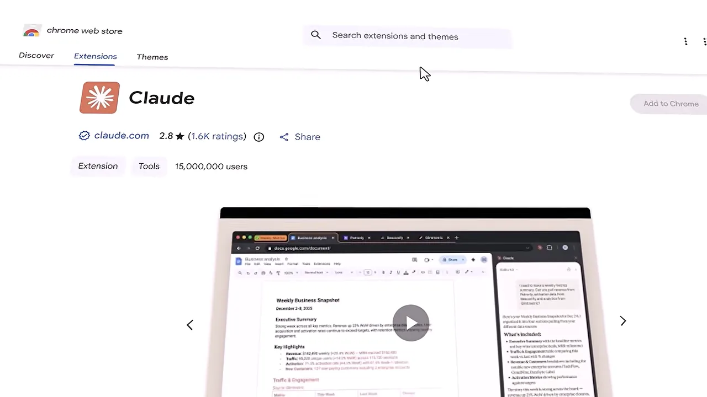
실험: 코기 디자인 하나로 고양이 20종 만들기
도구를 다 연결했으니 Sarah는 작은 실험을 해요. 코기 디자인이 고양이로도 잘 먹힐 것 같았는데, 고양이 굿즈에는 걸림돌이 하나 있어요. 고양이는 흰색, 얼룩무늬(태비), 검은색, 회색처럼 털색이 아주 다양해요. 그리고 고양이 주인은 대개 자기 고양이를 닮은 굿즈만 사요. 흰 고양이 주인이 얼룩고양이 머그를 사지는 않겠죠. 그러니 디자인 하나를 여러 고양이 버전으로 만들어야 해요. 이 반복 작업을 에이전트에게 맡겼어요.
먼저 얼룩고양이 버전 하나
Sarah는 Claude Code에게 코기 디자인을 얼룩고양이 버전으로 바꿔 달라고 했어요. Claude Code는 Higgsfield 연결을 통해 Nano Banana Pro를 썼고, 세 가지 안을 내놨어요. 아래가 Sarah가 고른 안이에요. 같은 Loafin' Around 글씨 아래 주황 얼룩고양이가 엎드려 있고, 글씨도 고양이 털색에 맞춰 주황 계열로 바뀌었어요.
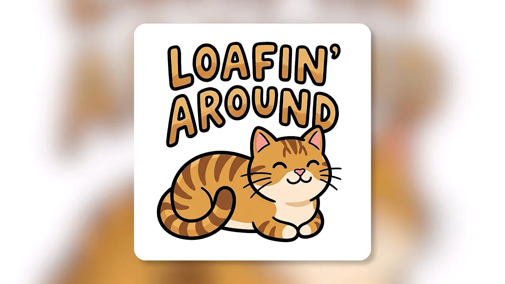
20가지로 늘려 달라는 요청
다음 요청이 진짜 시험이에요. 아래 화면의 요청문 앞부분은 이래요. 컴퓨터에 있는 'Loafin Around - Orange Tabby' 파일을 가져다 20가지 변형을 만들 것. 집에서 흔히 키우는 고양이 털색이나 품종으로 바꿀 것. 'Loafin' Around' 글씨는 같은 스타일로 두되, 색은 고양이마다 맞출 것.
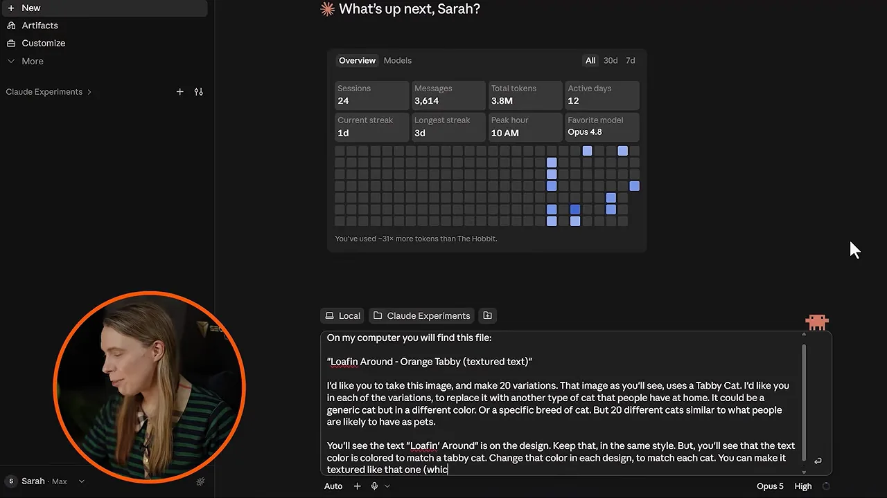
요청문 뒷부분에는 2단계의 작업 흐름이 그대로 들어 있어요. 아래 화면 가운데 번호 목록이 그거예요. Higgsfield로 이미지를 만들고, Canva에서 이미지마다 ① 배경 제거 ② AI 업스케일 ③ 배경이 투명한 PNG를 2배 크기로 저장하라고 적었어요. 마지막 줄은 Chrome에 Claude 확장이 켜져 있다는 안내예요.
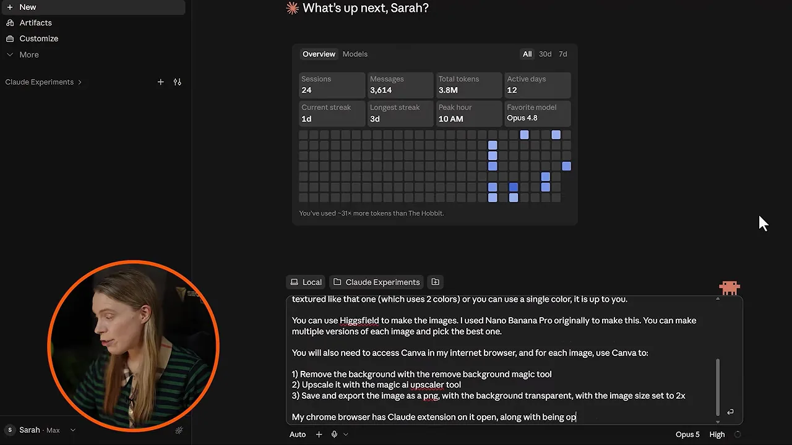
맡겨 두고 기다리기
Sarah는 요청을 보내고 Claude Code를 내버려 뒀어요. 에이전트는 이미지를 만들고, 하나씩 Canva에 넣어 브라우저에서 도구를 조작했어요. 아래 진행 기록을 보면 'Page 4 done. Page 5', 'Page 6 done. Page 7'처럼 한 장씩 처리하고, 'Using claude-in-chrome: Browser batch'라는 줄로 브라우저를 조작하는 중임을 알려요.
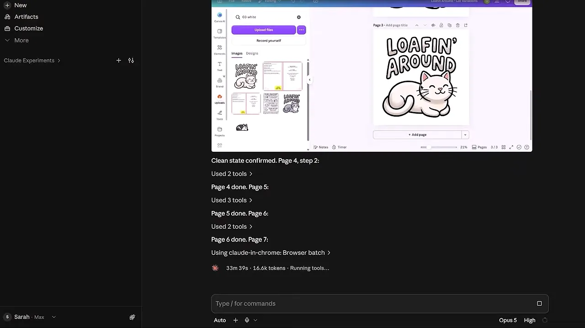
결과는 컴퓨터의 'Variations' 폴더에 쌓였어요. 아래 화면 파일 이름을 보면 Black Cat, Tuxedo Cat, White Cat, British Shorthair, Russian Blue, Siamese, Ragdoll, Calico처럼 털색과 품종이 다 달라요. 글씨 색도 고양이마다 달라졌어요. 맨 앞의 '_FINAL_CONTACT_SHEET'는 20장을 한눈에 보는 모음 이미지예요.
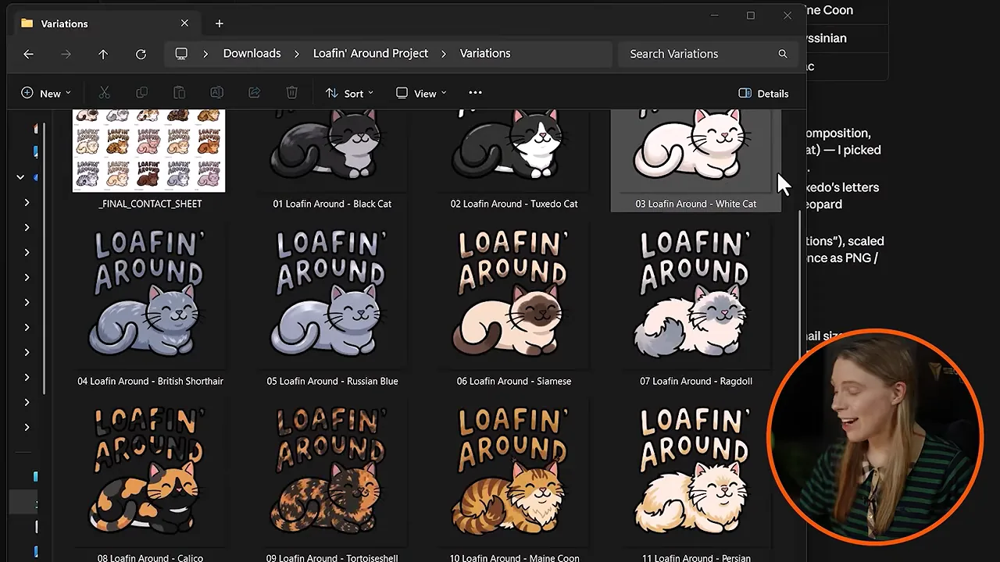
3단계: Etsy의 AI 추천 알고리즘에 올라타요
마지막 단계는 손님을 모으는 일이에요. Sarah의 방법은 단순해요. Etsy의 AI 추천 알고리즘에 올라타는 거예요. 큰 웹사이트나 SNS(Social Networking Service)는 이미 매달 수억에서 수십억 번의 방문이 있어서, 거기에 올리기만 해도 그 흐름을 쓸 수 있어요. Sarah에 따르면 Etsy는 세계에서 67번째로 방문자가 많은 사이트이고, 매달 4억~5억 번 방문이 있어요.
문제는 같은 곳에 상품을 올리는 경쟁자가 많다는 거예요. Etsy는 사용자가 전에 좋아하고 산 것을 바탕으로, 살 만한 상품을 AI로 골라 추천해요. Sarah는 상품을 올릴 때 이 추천에 맞춰 다듬어서, 경쟁자 대신 자기 상품이 뜨게 해요. 지금도 이게 주된 손님 경로이고, 첫 두 건의 판매도 여기서 나왔어요. 아래는 그 무렵 가게 통계예요. 방문 71회, 주문 2건, 전환율 2.8%, 매출 53.18달러이고, 그래프 오른쪽 끝이 위로 솟아 있어요.
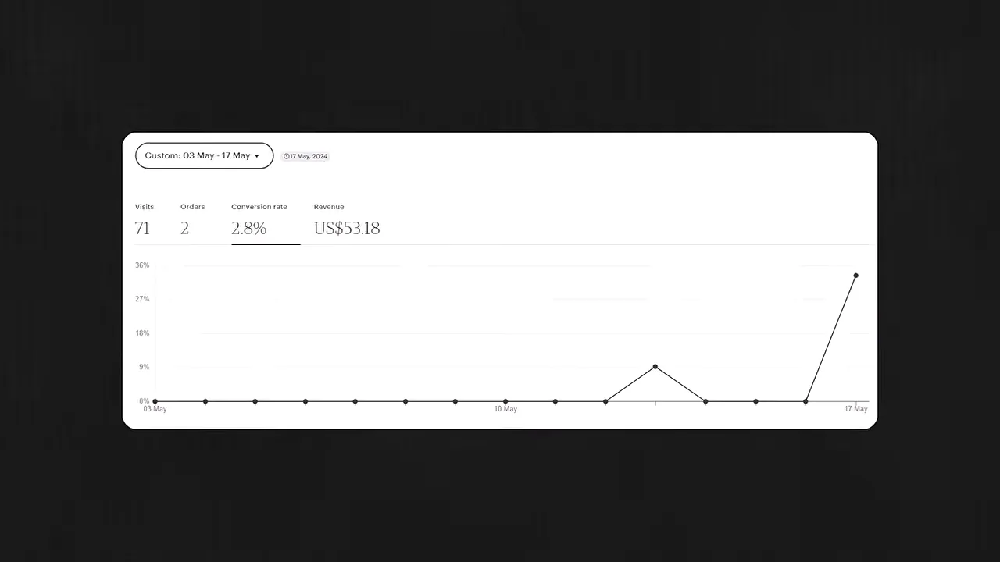
알고리즘은 세 단계로 움직여요
추천에 맞추려면 알고리즘이 어떻게 움직이는지 알아야 해요. Sarah는 모든 상품이 세 단계를 거친다고 설명해요. 아래 슬라이드가 그 흐름이에요. 맨 위 'Test Impressions', 가운데 'The Results', 아래에서 두 갈래로 나뉘어 왼쪽이 'Snowball Expansion', 오른쪽이 'Product Fizzles'예요.
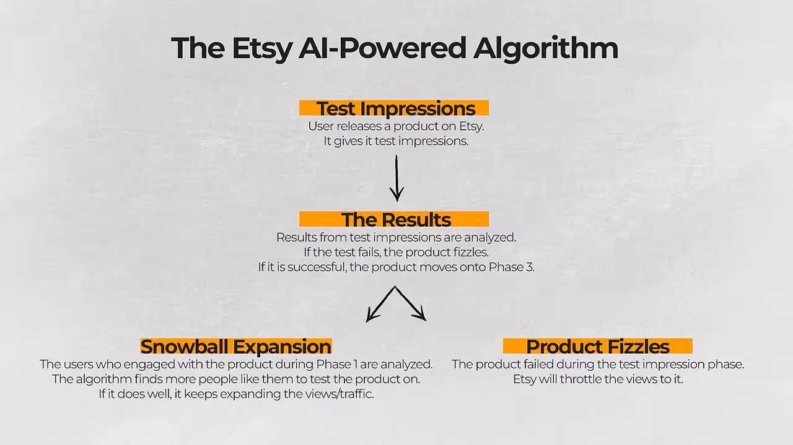
- 시험 노출 — 머그를 새로 올리면 Etsy의 AI가 사진·제목·설명·태그를 분석해, 수천만 명의 활성 손님 중 누가 살지 추측해요. 그리고 작은 시험 집단을 골라 홈 화면·앱·검색 결과에 띄워 줘요. Sarah는 이 단계가 가장 중요하다고 말해요.
- 결과 — 시험 집단이 누르거나, 더 좋게는 샀는지 봐요. 반응이 모자라면 시험은 사그라들고 Etsy는 밀어주기를 멈춰요.
- 눈덩이 확장 — 시험을 통과하면 반응한 사람들을 분석해 비슷한 손님을 찾아 시험 집단을 넓혀요. 거기서 또 통과하면 더 넓혀요. 이렇게 입소문처럼 퍼져요.
Sarah는 이 방식이 공정하다고 봐요. 새 가게든 오래된 가게든 모든 상품을 똑같이 시험하니, SNS 팔로워나 리뷰가 없어도 좋은 상품이면 팔릴 기회가 있어요. 그리고 이런 알고리즘을 멀티암드 밴딧 알고리즘이라고 부른다고 소개해요. YouTube, TikTok, Google, LinkedIn, Amazon KDP(Kindle Direct Publishing), Instagram 같은 큰 플랫폼도 비슷한 방식을 쓴다고 말해요.
약점은 첫 시험 집단이에요
이 방식에도 약점이 있어요. AI가 처음에 엉뚱한 사람들을 시험 집단으로 고르면, 좋은 상품이어도 반응이 없어서 그대로 묻혀요. 그래서 Sarah는 ChatGPT·Gemini·Claude 같은 챗봇으로 상품 정보를 다듬어, 알고리즘이 누구에게 보여 줄지 쉽게 알아보게 해요. 아래 화면에서 Sarah는 머그 사진과 디자인 파일을 올리고 이렇게 써요. '12온스 흰 세라믹 코기 머그를 Etsy에 올리려 한다. 알고리즘이 맞는 손님과 쉽게 연결하게 해서 무료 손님을 최대한 얻고 싶다. 최적화된 제목·설명·태그를 만들어 달라.'
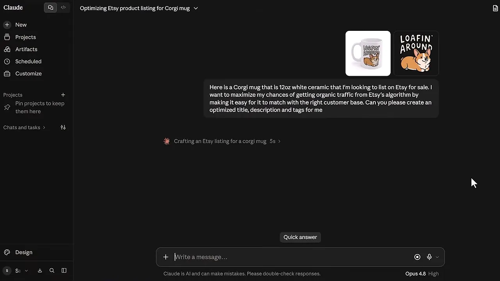
Claude의 답에는 상품 설명이 바로 쓸 수 있는 형태로 나와요. 아래 화면 맨 위 굵은 글씨가 설명의 첫 줄이고, 이어서 'Details you'll love'(상품 특징)와 'The perfect gift for'(이런 분께 선물하기 좋아요) 목록이 있어요. 선물 목록에는 코기 주인, 웰시 코기 팬처럼 이 머그를 살 사람이 구체적으로 적혀 있어요.
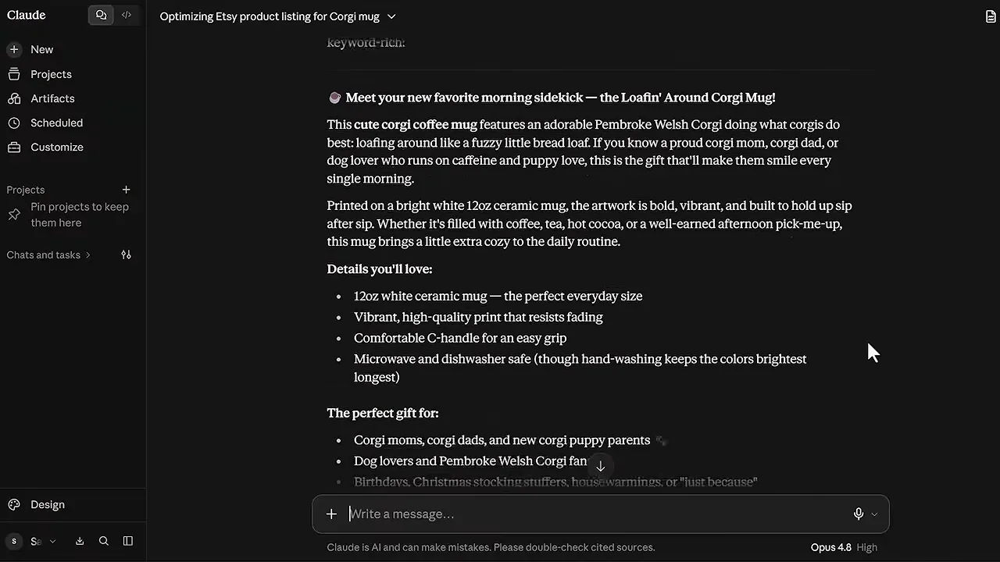